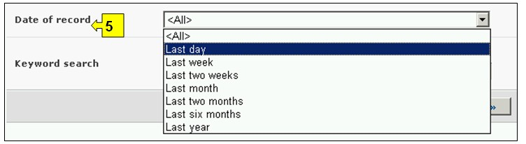

L’interface de recherche d’informations sur les OVMs, Gènes et Organismes est accessible depuis le lien dans le menu déroulant de Trouver l’Information sur la barre de navigation, ou depuis le lien dans le menu à gauche de la page Trouver l’Information ou depuis le lien dans le texte OVMs, Gènes et Organismes sur la même page.
Sur la page Recherche d’OVM, de gènes et d’organismes, l’utilisateur peut chercher des informations sur :
1. Le Registre d’identifiants uniques d’OVM (OVM-Idu), qui fournit des informations sommaires sur tous les organismes vivants modifiés enregistrés au CEPRB, y compris des événements de transformation, des modifications génétiques, et le code d’identification unique (lorsque disponible) pour chaque enregistrement. Dans chaque enregistrement d’OVM des liens vers toutes les décisions et évaluations des risques qui font allusion à ces organismes sont accessibles à travers des onglets;
2. Le Registre des gènes, qui fournit des informations sommaires sur les éléments du gène et les caractéristiques des modifications génétiques des OVM ;
3. Le Registre des organismes, qui fournit des informations sommaires sur les organismes parents, récepteurs ou donneurs en rapport aux OVM enregistrés au CEPRB.
Sur la page Recherche d’OVM, de gènes et d’organismes, il y a six boîtes de critères de recherche pour affiner les recherches dans cette base de données. Chacune a un menu déroulant depuis lequel il est possible de sélectionner le critère désiré. Pour chaque menu déroulant, le choix par défaut est le premier critère en haut de la liste du menu. A droite de chaque boîte, un bouton permet à l’utilisateur d’activer la sélection multiple. Une fois dans le mode sélection multiple il est possible d’ajouter plus de critères à la sélection en cliquant sur le critère approprié tout en pressant sur la touche Ctrl (Contrôle).

Figure 46
La Boîte 1 [Registres] liste les trois registres disponibles : OVM, Gène et Organisme Parent ou Donneur.

Figure 47
La Boîte 2 [Type d’organisme vivant modifié] permet à l’utilisateur d’appliquer des filtres pour divers aspects d’un OVM afin de restreindre encore plus la recherche des enregistrements qui sont spécifiquement en rapport avec le critère sélectionné. Les catégories de filtres disponibles sont les suivants : (i) OVMs, identifiés normalement par un Identifiant Unique (par ex. MONØØ81Ø-6), (ii) Traits présentés ou modifies (par ex. Tolérance au Glyphosate), (iii) Nom du Gène (par ex. Cry1A(b)), (iv) Technique Utilisée (par ex. par Agrobacterium), (v) Nom commun de l’organisme parent (par ex. Maïs), (vi) Nom scientifique de l’organisme parent (par ex. Zea Mays) ou (vii) Demandeur (entrée de texte libre – par ex. Monsanto).
En sélectionnant un ou plusieurs filtres du menu déroulant on ouvre des boîtes de recherche additionnelles avec un menu déroulant d’options, chacune en rapport avec l’un des filtres sélectionnés. Plusieurs filtres peuvent être cumulés en utilisant la touche Ctrl (Contrôle) (c’est-à-dire, en cliquant sur le filtre approprié tout en appuyant sur la touche Ctrl).

Figure 48
La Boîte 3 [Type de Gène] permet à l’utilisateur d’appliquer des filtres pour un nom de gène et/ou pour un trait du gène pour restreindre encore plus la recherche des enregistrements qui sont spécifiquement en rapport avec le critère sélectionné.
En sélectionnant un ou les deux filtres depuis le menu déroulant on ouvre des boîtes de recherche additionnelles avec un menu déroulant d’options, chacune en rapport avec l’un des filtres sélectionnés. Plusieurs filtres peuvent être cumulés en utilisant la touche Ctrl (Contrôle) (c’est-à-dire, en cliquant sur le filtre approprié tout en appuyant sur la touche Ctrl).
Figure 49
La Boîte 4 [Type d'organisme] permet à l’utilisateur d’appliquer des filtres pour le nom commun et/ou pour le nom scientifique de l’organisme afin de restreindre encore plus la recherche des enregistrements qui sont spécifiquement en rapport avec le critère sélectionné.
En sélectionnant un ou les deux filtres du menu déroulant on ouvre des boîtes de recherche additionnelles avec un menu déroulant d’options, chacune en rapport avec l’un des filtres sélectionnés. Plusieurs filtres peuvent être cumulés en utilisant la touche Ctrl (Contrôle) (c’est-à-dire, en cliquant sur le filtre approprié tout en appuyant sur la touche Ctrl).

Figure 50
La Boîte 5 [Date de l’enregistrement] permet à l’utilisateur de restreindre la recherche à la date à laquelle l’enregistrement a été entré dans le CEPRB. Le menu déroulant fournit un certain nombre d’options pour limiter la recherche seulement aux enregistrements soumis au cours de la période sélectionnée (par ex. «dernier jour», « dernier mois», « dernière année», etc.).

Figure 51
La Boîte 6 [Recherche par mot clé] fournit une opportunité d’utiliser des mots clé pour restreindre la recherche. L’utilisateur peut utiliser une syntaxe standard avec des mots clé (combinaison d’opérateurs AND / OR) pour chercher avec plusieurs mots ou parties centrales de mots (par ex. « Importation OR Exportation »). Une recherche effectuée en utilisant des mots clé donne seulement les résultats d’enregistrements contenant exactement le texte recherché et non pas les synonymes possibles qui n’ont pas été insérés (c’est-à-dire, une recherche avec un mot clé unique « maïs » donnera une liste d’enregistrements contenant le mot « maïs » mais non pas les mots « corn » ou « Zea mays »).

Figure 52
La page de recherche présente trois boutons pour produire une liste d’enregistrements. Le bouton Rechercher (à la fois en haut et en bas de l’interface de recherche) permet à l’utilisateur d’activer une recherche sur la base des critères de recherche sélectionnés dans les boîtes des moteurs de recherche. Les résultats de la recherche sont par défaut classés alphabétiquement par pays. Le bouton Afficher tous les enregistrements (en bas de l’interface de recherche) permet à l’utilisateur d’obtenir une liste de tous les enregistrements dans cette base de données.

Figure 53
Les pages des Résultats de la recherche ont un outil de classement en dessus de la liste d’enregistrements. Celui-ci peut être utilisé pour classer les enregistrements selon des critères spécifiques pour cette catégorie d'information. Notez que les critères de classement changent lorsque l’utilisateur sélectionne des critères de recherche différents.

Figure 54
Exemple: Un utilisateur veut identifier toutes les modifications de colza canola produites par BASF, qui améliorent la dégradation du phytate. L’utilisateur : (i) sélectionne Filtre par demandeur dans al boîte Type d’OVM et tape BASF dans la boîte Demandeur ; (ii) puis il sélectionne Filtre par trait dans la boîte Type de gène et Dégradation du phytate dans la boîte Traits présentés ou modifiés ; et (iii) sélectionne Filtre par nom commun dans la boîte Type d’organisme et sélectionne Navette dans la boîte Organisme parent.
En cliquant sur le bouton Rechercher on affiche les résultats de la recherche qui sont affichés comme une liste d’enregistrements. Pour obtenir des informations détaillées sur chaque OVM il faut sélectionner le titre de l’enregistrement.
Figure 55

Figure 56